animals
Animals are multicellular, eukaryotic organisms in the biological kingdom Animalia (/ˌænɪˈmeɪliə/[4])
With few exceptions, animals consume organic material, breathe oxygen, have myocytes and are able to move,
can reproduce sexually, and grow from a hollow sphere of cells, the blastula, during embryonic development
Animals form a clade, meaning that they arose from a single common ancestor.
Over 1.5 million living animal species have been described, of which around 1.05 million are insects, over
85,000 are molluscs, and around 65,000 are vertebrates. It has been estimated there are as many as 7.77
million animal species on Earth. Animal body lengths range from 8.5 μm (0.00033 in) to 33.6 m (110 ft).
They have complex ecologies and interactions with each other and their environments, forming intricate
food webs. The scientific study of animals is known as zoology, and the study of animal behaviour is
known as ethology.
Most living animal species belong to the infrakingdom Bilateria, a highly proliferative clade whose
members have a bilaterally symmetric body plan. The vast majority belong to two large superphyla: the
protostomes, which includes organisms such as the arthropods, molluscs, flatworms, annelids and nematodes;
and the deuterostomes, which include the echinoderms, hemichordates and chordates, the latter of which
contains the vertebrates. The simple Xenacoelomorpha have an uncertain position within Bilateria.
Animals first appear in the fossil record in the late Cryogenian period and diversified in the subsequent
Ediacaran. Earlier evidence of animals is still controversial; the sponge-like organism Otavia has been
dated back to the Tonian period at the start of the Neoproterozoic, but its identity as an animal i
s heavily contested.[5] Nearly all modern animal phyla became clearly established in the fossil record
as marine species during the Cambrian explosion, which began around 539 million years ago (Mya), and
most classes during the Ordovician radiation 485.4 Mya. 6,331 groups of genes common to all living
animals have been identified; these may
have arisen from a single common ancestor that lived about 650 Mya during the Cryogenian period.
Historically, Aristotle divided animals into those with blood and those without. Carl Linnaeus created
the first hierarchical biological classification for animals in 1758 with his Systema Naturae, which
Jean-Baptiste Lamarck expanded into 14 phyla by 1809. In 1874, Ernst Haeckel divided the animal kingdom
into the multicellular Metazoa (now synonymous with Animalia) and the Protozoa, single-celled organisms
no longer considered animals. In modern times, the biological classification of animals relies on advanc
ed techniques, such as molecular phylogenetics, which are effective at demonstrating the evolutionary re
lationships between taxa.
Humans make use of many other animal species for food (including meat, eggs, and dairy products), for mat
erials (such as leather, fur, and wool), as pets and as working animals for transportation, and services
. Dogs, the first domesticated animal, have been used in hunting, in security and in warfare, as have hors
es, pigeons and birds of prey; while other terrestrial and aquatic animals are hunted for sports, trophies
or profits. Non-human animals are also an important cultural element of human evolution, having appeared in
cave arts and totems since the earliest times, and are frequently featured in mythology, religion, arts, l
iterature, heraldry, politics, and sports.
Etymology
The word animal comes from the Latin noun animal of the same meaning, which is itself derived from
Latin animalis 'having breath or soul' The biological definition includes all members of the ki
ngdom Animalia. In colloquial usage, the term animal is often used to refer only to nonhuman animals.
The term metazoa is derived from Ancient Greek μετα (meta) 'after' (in biology, the prefix
meta-
stands for 'later') and ζῷᾰ (zōia) 'animals', plural of
zōion 'animal'.
Characteristic
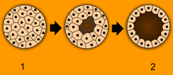Animals have several characteristics that set them apart from other living things. Animals are
eukaryotic and multicellular.[14] Unlike plants and algae, which produce their own nutrients,[15] animals
are heterotrophic,[16][17] feeding on organic material and digesting it internally.[18] With very few exce
ptions, animals respire aerobically.[a][20] All animals are motile[21] (able to spontaneously move their b
odies) during at least part of their life cycle, but some animals, such as sponges, corals, mussels, and b
rnacles, later become sessile. The blastula is a stage in embryonic development that is unique to animals,
allowing cells to be differentiated into specialised
tissues and organs.[22]
Structure
All animals are composed of cells, surrounded by a characteristic extracellular matrix composed of collagen
and elastic glycoproteins.[23] During development, the animal extracellular matrix forms a relatively flexible
framework upon which cells can move about and be reorganised, making the formation of complex str
uctures possible.
This may be calcified, forming
structures such as shells, bones, and spicules.[24] In contrast, the cells of other multicellular organisms
(primarily algae, plants, and fungi) are held in place by cell walls, and so develop by progressive growth.
[25] Animal cells uniquely possess the cell junctions called tight junctions, gap junctions, and desmosomes.[26]
With few exceptions—in particular, the sponges and placozoans—animal bodies are differentiated into tissues.
[27] These include muscles, which enable locomotion, and nerve tissues, which transmit signals and coordinate
the body. Typically, there is also an internal digestive chamber with either one opening (in Ctenophora, Cnidaria
, and flatworms) or two openings (in most bilaterians).[28]
Reproduction and development
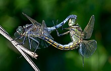See also: Sexual reproduction § Animals, and Asexual reproduction § Examples in animals
Sexual reproduction is nearly universal in animals, such as these dragonflies.
Nearly all animals make use of some form of sexual reproduction.[29] They produce haploid gametes by meiosis;
the smaller, motile gametes are spermatozoa and the larger, non-motile gametes are ova.[30] These fuse to form
zygotes,[31] which develop via mitosis into a hollow
sphere, called a blastula. In sponges, blastula larvae swim to a new location, attach to the seabed, and
develop into a new sponge.[32] In most other groups, the blastula undergoes more complicated rearrangement.
It first invaginates to form a gastrula with a digestive chamber and two separate germ layers, an external
ectoderm and an internal endoderm.[34] In most cases, a third germ layer, the mesoderm, also develops
between them.[35] These germ layers then differentiate to form tissues and organs.[36]
Repeated instances of mating with a close relative during sexual reproduction generally leads to
inbreeding depression within a population due to the increased prevalence of harmful recessive
traits.[37][38] Animals have evolved numerous mechanisms for avoiding close inbreeding.[39]
Some animals are capable of asexual reproduction, which often results in a genetic clone of
the parent. This may take place through fragmentation; budding, such as in Hydra and other
cnidarians; or parthenogenesis, where fertile eggs are produced without mating, such as in
aphids.[40][41]
Ecology
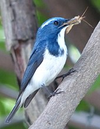Animals are categorised into ecological groups depending on their trophic levels and how they consume organic
material. Such groupings include carnivores (further divided into subcategories such as piscivores,
insectivores, ovivores, etc.), herbivores (subcategorized into folivores, graminivores, frugivores,
granivores, nectarivores, algivores, etc.), omnivores, fungivores, scavengers/detritivores,[42] and
parasites.[43] Interactions between animals of each biome form complex food webs within that ecosystem.
In carnivorous or omnivorous species, predation is a consumer–resource interaction where the predator f
eeds on another organism, its prey,[44] who often evolves anti-predator adaptations to avoid being fed
upon. Selective pressures imposed on one another lead to an evolutionary arms race between predator a
d prey, resulting in various antagonistic/competitive coevolutions.[45][46] Almost all multicellular
predators are animals.[47] Some consumers use multiple methods; for example, in parasitoid wasps, the
larvae feed on the hosts' living tissues, killing them in the process,[48] but the adults primarily
consume nectar from flowers.[49] Other animals may have very specific feeding behaviours, such as ha
wksbill sea turtles which mainly
eat sponges.[50]
Most animals rely on biomass and bioenergy produced by plants and phytoplanktons (collectively called producers)
through photosynthesis. Herbivores, as primary consumers, eat the plant material directly to digest and absorb
the nutrients, while carnivores and other animals on higher trophic levels indirectly acquire the nutrients by
eating the herbivores or other animals that have eaten the herbivores. Animals oxidize carbohydrates, lipids,
proteins and other biomolecules, which allows the animal to grow and to sustain basal metabolism and fuel other
biological processes such as locomotion.[51][52][53] Some benthic animals living close to hydrothermal vents and
cold seeps on the dark sea floor consume organic matter produced through chemosynthesis (via oxidizing inorganic
compounds such as hydrogen sulfide) by archaea and bacteria.[54]
Animals evolved in the sea. Lineages of arthropods colonised land around the same time as land plants, probably
between 510 and 471 million years ago during the Late Cambrian or Early Ordovician.[55] Vertebrates such as the
lobe-finned fish Tiktaalik started to move on to land in the late Devonian, about 375 million years ago.
Animals occupy virtually all of earth's habitats and microhabitats, with faunas adapted to salt water,
hydrothermal vents, fresh water, hot springs, swamps, forests, pastures, deserts, air, and the interiors
of other organisms.[58] Animals are however not particularly heat tolerant; very few of them can survive
at constant temperatures above 50 °C (122 °F)[59] or in the most extreme cold deserts of continental
Antarctica.[60]
Diversity
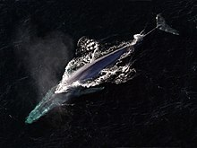Size
The blue whale (Balaenoptera musculus) is the largest animal that has ever lived, weighing up to 190
tonnes and measuring up to 33.6 metres (110 ft) long.[61][62][63] The largest extant terrestrial animal
is the African bush elephant (Loxodonta africana), weighing up to 12.25 tonnes[61] and measuring up to
10.67 metres (35.0 ft) long.[61] The largest terrestrial animals that ever lived were titanosaur sauropod
dinosaurs such as Argentinosaurus, which may have weighed as much as 73 tonnes, and Supersaurus which may
have reached 39 meters.[64][65] Several animals are microscopic; some Myxozoa (obligate parasites within
the Cnidaria) never grow larger than 20 μm,[66] and one of the smallest species (Myxobolus shekel) is no
more than 8.5
μm when fully grown.[67]
Evolutionary origin
Evidence of animals is found as long ago as the Cryogenian period. 24-Isopropylcholestane (24-ipc) has been found in rocks from roughly 650 million years ago; it is only produced by sponges and pelagophyte algae. Its likely origin is from sponges based on molecular clock estimates for the origin of 24-ipc production in both groups. Analyses of pelagophyte algae consistently recover a Phanerozoic origin, while analyses of sponges recover a Neoproterozoic origin, consistent with the appearance of 24-ipc in the fossil record.[90][91] The first body fossils of animals appear in the Ediacaran, represented by forms such as Charnia and Spriggina. It had long been doubted whether these fossils truly represented animals,[92][93][94] but the discovery of the animal lipid cholesterol in fossils of Dickinsonia establishes their nature.[95] Animals are thought to have originated under low-oxygen conditions, suggesting that they were capable of living entirely by anaerobic respiration, but as they became specialized for aerobic metabolism they became fully dependent on oxygen in their environments.[96] Many animal phyla first appear in the fossil record during the Cambrian explosion, starting about 539 million years ago, in beds such as the Burgess shale.[97] Extant phyla in these rocks include molluscs, brachiopods, onychophorans, tardigrades, arthropods, echinoderms and hemichordates, along with numerous now-extinct forms such as the predatory Anomalocaris. The apparent suddenness of the event may however be an artifact of the fossil record, rather than showing that all these animals appeared simultaneously.[98][99][100][101][102] That view is supported by the discovery of Auroralumina attenboroughii, the earliest known Ediacaran crown-group cnidarian (557–562 mya, some 20 million years before the Cambrian explosion) from Charnwood Forest, England. It is thought to be one of the earliest predators, catching small prey with its nematocysts as modern cnidarians do.[103] Some palaeontologists have suggested that animals appeared much earlier than the Cambrian explosion, possibly as early as 1 billion years ago.[104] Early fossils that might represent animals appear for example in the 665-million-year-old rocks of the Trezona Formation of South Australia. These fossils are interpreted as most probably being early sponges.[105] Trace fossils such as tracks and burrows found in the Tonian period (from 1 gya) may indicate the presence of triploblastic worm-like animals, roughly as large (about 5 mm wide) and complex as earthworms.[106] However, similar tracks are produced by the giant single-celled protist Gromia sphaerica, so the Tonian trace fossils may not indicate early animal evolution.[107][108] Around the same time, the layered mats of microorganisms called stromatolites decreased in diversity, perhaps due to grazing by newly evolved animals.[109] Objects such as sediment-filled tubes that resemble trace fossils of the burrows of wormlike animals have been found in 1.2 gya rocks in North America, in 1.5 gya rocks in Australia and North America, and in 1.7 gya rocks in Australia. Their interpretation as having an animal
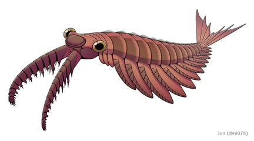 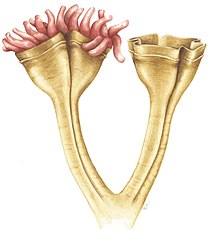 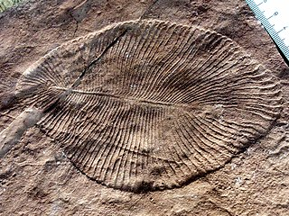
Phylogeny
External phylogeny Animals are monophyletic, meaning they are derived from a common ancestor. Animals are the sister group to the choanoflagellates, with which they form the Choanozoa.[112] The dates on the phylogenetic tree indicate approximately how many millions of years ago (mya) the lineages split.[113][114][115][116][117] Ros-Rocher and colleagues (2021) trace the origins of animals to unicellular ancestors, providing the external phylogeny shown in the cladogram. Uncertainty of relationships is indicated with dashed lines.[118]
Internal phylogeny The most basal animals, the Porifera, Ctenophora, Cnidaria, and Placozoa, have body plans that lack bilateral symmetry. Their relationships are still disputed; the sister group to all other animals could be the Porifera or the Ctenophora,[119] both of which lack hox genes, which are important for body plan development.[120] Hox genes are found in the Placozoa,[121][122] Cnidaria,[123] and Bilateria.[124][125] 6,331 groups of genes common to all living animals have been identified; these may have arisen from a single common ancestor that lived 650 million years ago in the Precambrian. 25 of these are novel core gene groups, found only in animals; of those, 8 are for essential components of the Wnt and TGF-beta signalling pathways which may have enabled animals to become multicellular by providing a pattern for the body's system of axes (in three dimensions), and another 7 are for transcription factors including homeodomain proteins involved in the control of development.[126][127] Giribet and Edgecombe (2020) provide what they consider to be a consensus internal phylogeny of the animals, embodying uncertainty about the structure at the base of the tree (dashed lines).[128]
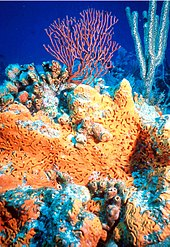
An alternative phylogeny, from Kapli and colleagues (2021), proposes a clade Xenambulacraria for the Xenacoelamorpha + Ambulacraria; this is either within Deuterostomia, as sister to Chordata, or the Deuterostomia are recovered as paraphyletic, and Xenambulacraria is sister to the proposed clade Centroneuralia, consisting of Chordata + Protostomia.[129] Eumetazoa, a clade which contains Ctenophora and ParaHoxozoa, has been proposed as a sister group to Porifera.[130] A competing hypothesis is the Benthozoa clade, which would consist of Porifera and ParaHoxozoa as a sister group of Ctenophora. [131][132] Non-bilateria Non-bilaterians include sponges (centre) and corals (background). Several animal phyla lack bilateral symmetry. These are the Porifera (sea sponges), Placozoa, Cnidaria (which includes jellyfish, sea anemones, and corals), and Ctenophora (comb jellies). Sponges are physically very distinct from other animals, and were long thought to have diverged first, representing the oldest animal phylum and forming a sister clade to all other animals.[133] Despite their morphological dissimilarity with all other animals, genetic evidence suggests sponges may be more closely related to other animals than the comb jellies are.[134][135] Sponges lack the complex organization found in most other animal phyla;[136] their cells are differentiated, but in most cases not organised into distinct tissues, unlike all other animals.[137] They typically feed by drawing in water through pores, filtering out small particles of food.[138] The comb jellies and Cnidaria are radially symmetric and have digestive chambers with a single opening, which serves as both mouth and anus.[139] Animals in both phyla have distinct tissues, but these are not organised into discrete organs.[140] They are diploblastic, having only two main germ layers, ectoderm and endoderm.[141] The tiny placozoans have no permanent digestive chamber and no symmetry; they superficially resemble amoebae.[142][143] Their phylogeny is poorly defined, and under active research.[134][144]
The remaining animals, the great majority—comprising some 29 phyla and over a million species—form the Bilateria clade, which have a bilaterally symmetric body plan. The Bilateria are triploblastic, with three well-developed germ layers, and their tissues form distinct organs. The digestive chamber has two openings, a mouth and an anus, and there is an internal body cavity, a coelom or pseudocoelom. These animals have a head end (anterior) and a tail end (posterior), a back (dorsal) surface and a belly (ventral) surface, and a left and a right side.[145][146] Having a front end means that this part of the body encounters stimuli, such as food, favouring cephalisation, the development of a head with sense organs and a mouth. Many bilaterians have a combination of circular muscles that constrict the body, making it longer, and an opposing set of longitudinal muscles, that shorten the body;[146] these enable soft-bodied animals with a hydrostatic skeleton to move by peristalsis.[147] They also have a gut that extends through the basically cylindrical body from mouth to anus. Many bilaterian phyla have primary larvae which swim with cilia and have an apical organ containing sensory cells. However, over evolutionary time, descendant spaces have evolved which have lost one or more of each of these characteristics. For example, adult echinoderms are radially symmetric (unlike their larvae), while some parasitic worms have extremely simplified body structures.[145][146] Genetic studies have considerably changed zoologists' understanding of the relationships within the Bilateria. Most appear to belong to two major lineages, the protostomes and the deuterostomes.[148] It is often suggested that the basalmost bilaterians are the Xenacoelomorpha, with all other bilaterians belonging to the subclade Nephrozoa.[149][150][151] However, this suggestion has been contested, with other studies finding that xenacoelomorphs are more closely related to Ambulacraria than to other bilaterians.[129] Protostomes and deuterostomes
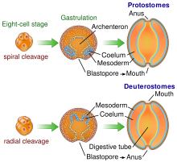
Main articles: Protostome and Deuterostome The bilaterian gut develops in two ways. In many protostomes, the blastopore develops into the mouth, while in deuterostomes it becomes the anus. Protostomes and deuterostomes differ in several ways. Early in development, deuterostome embryos undergo radial cleavage during cell division, while many protostomes (the Spiralia) undergo spiral cleavage.[152] Animals from both groups possess a complete digestive tract, but in protostomes the first opening of the embryonic gut develops into the mouth, and the anus forms secondarily. In deuterostomes, the anus forms first while the mouth develops secondarily.[153][154] Most protostomes have schizocoelous development, where cells simply fill in the interior of the gastrula to form the mesoderm. In deuterostomes, the mesoderm forms by enterocoelic pouching, through invagination of the endoderm.[155] The main deuterostome phyla are the Echinodermata and the Chordata.[156] Echinoderms are exclusively marine and include starfish, sea urchins, and sea cucumbers.[157] The chordates are dominated by the vertebrates (animals with backbones),[158] which consist of fishes, amphibians, reptiles, birds, and mammals.[159] The deuterostomes also include the Hemichordata (acorn worms).[160][161]
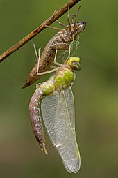The Ecdysozoa are protostomes, named after their shared trait of ecdysis, growth by moulting.[162] They include the largest animal phylum, the Arthropoda, which contains insects, spiders, crabs, and their kin. All of these have a body divided into repeating segments, typically with paired appendages. Two smaller phyla, the Onychophora and Tardigrada, are close relatives of the arthropods and share these traits. The ecdysozoans also include the Nematoda or roundworms, perhaps the second largest animal phylum. Roundworms are typically microscopic and occur in nearly every environment where there is water;[163] some are important parasites.[164] Smaller phyla related to them are the Nematomorpha or horsehair worms, and the Kinorhyncha, Priapulida, and Loricifera. These groups have a reduced coelom, called a pseudocoelom.[165] Spiralia Main article: Spiralia Spiral cleavage in a sea snail embryo The Spiralia are a large group of protostomes that develop by spiral cleavage in the early embryo.[166] The Spiralia's phylogeny has been disputed, but it contains a large clade, the superphylum Lophotrochozoa, and smaller groups of phyla such as the Rouphozoa which includes the gastrotrichs and the flatworms. All of these are grouped as the Platytrochozoa, which has a sister group, the Gnathifera, which includes the rotifers.[167][168] The Lophotrochozoa includes the molluscs, annelids, brachiopods, nemerteans, bryozoa and entoprocts.[167][169][170] The molluscs, the second-largest animal phylum by number of described species, includes snails, clams, and squids, while the annelids are the segmented worms, such as earthworms, lugworms, and leeches. These two groups have long been considered close relatives because they share trochophore larvae.[171][172]
History of classification Further information: Taxonomy (biology), History of zoology through 1859, and History of zoology since 1859 Jean-Baptiste de Lamarck led the creation of a modern classification of invertebrates, breaking up Linnaeus's "Vermes" into 9 phyla by 1809.[173] In the classical era, Aristotle divided animals,[e] based on his own observations, into those with blood (roughly, the vertebrates) and those without. The animals were then arranged on a scale from man (with blood, 2 legs, rational soul) down through the live-bearing tetrapods (with blood, 4 legs, sensitive soul) and other groups such as crustaceans (no blood, many legs, sensitive soul) down to spontaneously generating creatures like sponges (no blood, no legs, vegetable soul). Aristotle was uncertain whether sponges were animals, which in his system ought to have sensation, appetite, and locomotion, or plants, which did not: he knew that sponges could sense touch and would contract if about to be pulled off their rocks, but that they were rooted like plants and never moved about.[174] In 1758, Carl Linnaeus created the first hierarchical classification in his Systema Naturae.[175] In his original scheme, the animals were one of three kingdoms, divided into the classes of Vermes, Insecta, Pisces, Amphibia, Aves, and Mammalia. Since then, the last four have all been subsumed into a single phylum, the Chordata, while his Insecta (which included the crustaceans and arachnids) and Vermes have been renamed or broken up. The process was begun in 1793 by Jean-Baptiste de Lamarck, who called the Vermes une espèce de chaos (a chaotic mess)[f] and split the group into three new phyla: worms, echinoderms, and polyps (which contained corals and jellyfish). By 1809, in his Philosophie Zoologique, Lamarck had created 9 phyla apart from vertebrates (where he still had 4 phyla: mammals, birds, reptiles, and fish) and molluscs, namely cirripedes, annelids, crustaceans, arachnids, insects, worms, radiates, polyps, and infusorians.[173] In his 1817 Le Règne Animal, Georges Cuvier used comparative anatomy to group the animals into four embranchements ("branches" with different body plans, roughly corresponding to phyla), namely vertebrates, molluscs, articulated animals (arthropods and annelids), and zoophytes (radiata) (echinoderms, cnidaria and other forms).[177] This division into four was followed by the embryologist Karl Ernst von Baer in 1828, the zoologist Louis Agassiz in 1857, and the comparative anatomist Richard Owen in 1860.[178] In 1874, Ernst Haeckel divided the animal kingdom into two subkingdoms: Metazoa (multicellular animals, with five phyla: coelenterates, echinoderms, articulates, molluscs, and vertebrates) and Protozoa (single-celled animals), including a sixth animal phylum, sponges.[179][178] The protozoa were later moved to the former kingdom Protista, leaving only the Metazoa as a synonym of Animalia.[180]
In human culture
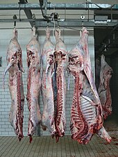The human population exploits a large number of other animal species for food, both of domesticated livestock species in animal husbandry and, mainly at sea, by hunting wild species.[181][182] Marine fish of many species are caught commercially for food. A smaller number of species are farmed commercially.[181][183][184] Humans and their livestock make up more than 90% of the biomass of all terrestrial vertebrates, and almost as much as all insects combined.[185] Invertebrates including cephalopods, crustaceans, and bivalve or gastropod molluscs are hunted or farmed for food.[186] Chickens, cattle, sheep, pigs, and other animals are raised as livestock for meat across the world.[182][187][188] Animal fibres such as wool are used to make textiles, while animal sinews have been used as lashings and bindings, and leather is widely used to make shoes and other items. Animals have been hunted and farmed for their fur to make items such as coats and hats.[189] Dyestuffs including carmine (cochineal),[190][191] shellac,[192][193] and kermes[194][195] have been made from the bodies of insects. Working animals including cattle and horses have been used for work and transport from the first days of agriculture.[196] Animals such as the fruit fly Drosophila melanogaster serve a major role in science as experimental models.[197][198][199][200] Animals have been used to create vaccines since their discovery in the 18th century.[201] Some medicines such as the cancer drug trabectedin are based on toxins or other molecules of animal origin.[202] A gun dog retrieving a duck during a hunt People have used hunting dogs to help chase down and retrieve animals,[203] and birds of prey to catch birds and mammals,[204] while tethered cormorants have been used to catch fish.[205] Poison dart frogs have been used to poison the tips of blowpipe darts.[206][207] A wide variety of animals are kept as pets, from invertebrates such as tarantulas, octopuses, and praying mantises,[208] reptiles such as snakes and chameleons,[209] and birds including canaries, parakeets, and parrots[210] all finding a place. However, the most kept pet species are mammals, namely dogs, cats, and rabbits.[211][212][213] There is a tension between the role of animals as companions to humans, and their existence as individuals with rights of their own.[214] A wide variety of terrestrial and aquatic animals are hunted for sport.[215]
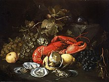The signs of the Western and Chinese zodiacs are based on animals.[216][217] In China and Japan, the butterfly has been seen as the personification of a person's soul,[218] and in classical representation the butterfly is also the symbol of the soul.[219][220] Artistic vision: Still Life with Lobster and Oysters by Alexander Coosemans, c. 1660 Animals have been the subjects of art from the earliest times, both historical, as in ancient Egypt, and prehistoric, as in the cave paintings at Lascaux. Major animal paintings include Albrecht Dürer's 1515 The Rhinoceros, and George Stubbs's c. 1762 horse portrait Whistlejacket.[221] Insects, birds and mammals play roles in literature and film,[222] such as in giant bug movies.[223][224][225] Animals including insects[218] and mammals[226] feature in mythology and religion. The scarab beetle was sacred in ancient Egypt,[227] and the cow is sacred in Hinduism.[228] Among other mammals, deer,[226] horses,[229] lions,[230] bats,[231] bears,[232] and wolves[233] are the subjects of